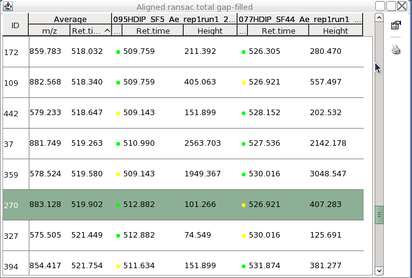

After the alignment, the resulting peak list could contain missing peaks as a product of a deficient peak detection or a mistake in the alignment of different peak lists. The fact that one peak is missing after the alignment doesn't implies that the peak doesn't exits. In most cases it is present but has remained undetected by the previous algorithms.
This algorithm is an extension of the "Peak Finder" algorithm which fills the gaps in the peak list if it is possible. It uses the same system to fill the gaps adding a previous correction of the retention time in the case it is needed.
This aligner requires the next parameters:
"Name suffix"
This is the suffix to identify the new peak list in Peak list frame of
desktop.
"Intensity tolerance"
This value sets the maximun allowed deviation from expected shape of a peak
in chromatographic direction.
"M/Z tolerance"
This value sets the range, in terms of m/z, to search for possible peak in the raw
data. Maximum allowed m/z difference.
"Absolute RT tolerance"
This value sets the range, in terms of retention time, to search for possible peak in the raw
data. Maximum allowed m/z difference.
New peak list showing the filled peaks with a yellow mark.
